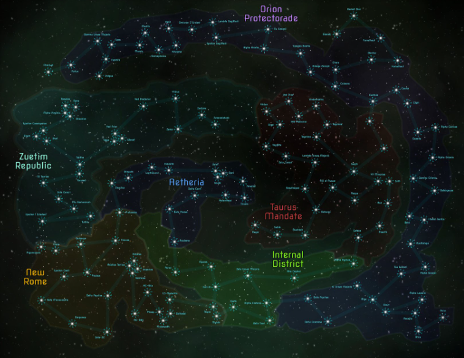

Origem do nome
O nome tem origem nos primórdios da sociedade interplanetária, com seus primeiros registros sendo ainda na Era de Bronze. Era usado inicialmente como referência ao meio pelo qual se navegava, ou seja, o espaço, significando algo como "Negro Mar de Estrelas", porém a popularização desse termo ao longo das gerações, especialmente nas áreas a noroeste de Zuetim, acabou transformando Calad de um substantivo comum a o nome próprio do universo.
Surgiu da mistura de línguas e fácil sonoridade
Veja mais